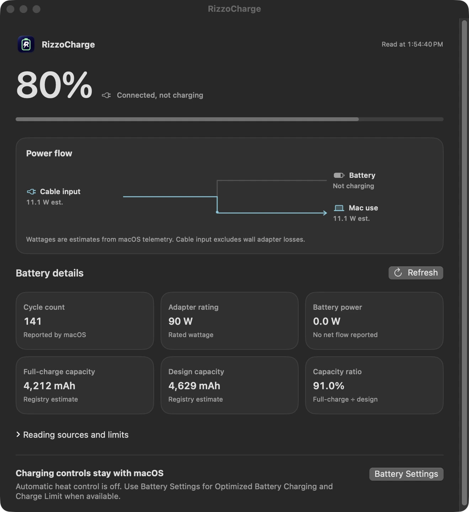

Check the menu bar
Read battery percentage and charging status without opening System Settings.
Battery monitor for macOS
Check charging status in the menu bar, then open the dashboard for estimated power flow, cycle count and battery capacity.

Read battery percentage and charging status without opening System Settings.
See AC input and Mac use estimates when the telemetry agrees on supported hardware.
See cycle count and the full-charge-to-design ratio alongside the adapter rating.
Tested on MacBook Air M4 (Mac16,12) with macOS 27.2.1. Cable input and Mac-use estimates are currently limited to this model on macOS 27.